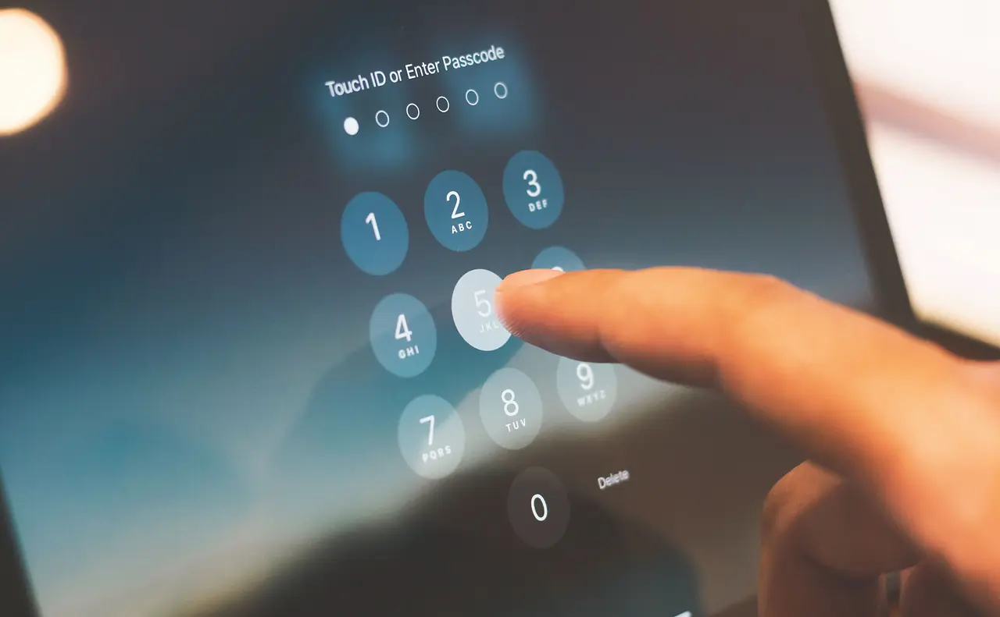

Website
Bảo mật website doanh nghiệp: HTTPS, sao lưu, phân quyền và cách xử lý khi bị hack
Phần lớn website doanh nghiệp bị tấn công không phải vì kẻ xấu nhắm riêng vào bạn, mà vì công cụ dò tự động tìm thấy một lỗ hổng chưa vá hoặc một mật khẩu yếu. Bài này đi qua từng lớp bảo vệ cơ bản mà doanh nghiệp nào cũng làm được, kèm checklist và các bước cần làm ngay khi website bị hack.
Bảo mật website doanh nghiệp là tập hợp những việc giúp website không bị chiếm quyền, chèn mã độc, mất dữ liệu hay ngừng hoạt động. Với đa số doanh nghiệp vừa và nhỏ, chỉ cần làm đều tay sáu việc cơ bản là đã chặn được phần lớn rủi ro: chạy HTTPS, sao lưu theo quy tắc 3-2-1, cập nhật phần mềm, dùng mật khẩu mạnh kèm xác thực hai lớp (2FA), phân quyền đúng người và đặt website sau một lớp CDN, tường lửa.
Bài WordPress hay code tay đã so sánh mức độ an toàn của hai nền tảng. Bài này không bàn chọn nền tảng mà đi vào việc vận hành: dù website làm bằng gì, doanh nghiệp cần làm gì để giữ nó an toàn, và phải làm gì khi chẳng may bị hack.
Vì sao website nhỏ cũng bị tấn công
Nhiều chủ doanh nghiệp nghĩ "website của mình nhỏ, ai thèm tấn công". Thực tế, phần lớn vụ tấn công vào website nhỏ diễn ra tự động: phần mềm dò quét hàng loạt địa chỉ trên Internet, tìm trang đăng nhập để thử mật khẩu, tìm phiên bản plugin hoặc phần mềm có lỗ hổng đã công bố. Website của bạn bị nhắm vì nó có lỗ hổng, không phải vì nó nổi tiếng.
Hậu quả thường gặp không phải là màn hình "bạn đã bị hack" mà kín đáo hơn: trang bị chèn liên kết quảng cáo cờ bạc, thuốc; khách bị chuyển hướng sang trang lừa đảo; máy chủ bị dùng gửi thư rác; dữ liệu khách hàng trong form liên hệ bị lấy. Khi Google phát hiện, kết quả tìm kiếm và trình duyệt có thể hiện cảnh báo, khách mất niềm tin ngay lập tức.
Danh sách OWASP Top 10:2025, tài liệu tham chiếu phổ biến nhất về rủi ro ứng dụng web, xếp kiểm soát truy cập kém (Broken Access Control) ở vị trí số một, tiếp theo là cấu hình bảo mật sai (Security Misconfiguration) và lỗi chuỗi cung ứng phần mềm (Software Supply Chain Failures), tức rủi ro đến từ thư viện, plugin, thành phần bên thứ ba. Ba mục này tương ứng gần như trực tiếp với các việc trong bài: phân quyền, cấu hình đúng và cập nhật thành phần.
SSL và HTTPS: lớp bảo vệ đầu tiên
HTTPS mã hóa dữ liệu giữa trình duyệt của khách và máy chủ, để thông tin khách điền vào form không bị đọc trộm trên đường truyền. Website không có HTTPS bị trình duyệt đánh dấu "không bảo mật", và Google đã dùng HTTPS làm một tín hiệu xếp hạng từ năm 2014.
- Chứng chỉ miễn phí của Let's Encrypt đủ cho phần lớn website doanh nghiệp; nhiều hosting và CDN tự cài và gia hạn.
- Chuyển hướng toàn bộ địa chỉ http sang https, kể cả bản có và không có "www".
- Kiểm tra không còn ảnh, mã nhúng tải qua http (lỗi "nội dung hỗn hợp") khiến ổ khóa biến mất.
- Theo dõi ngày hết hạn chứng chỉ; chứng chỉ hết hạn làm trình duyệt chặn khách bằng trang cảnh báo đỏ.
HTTPS chỉ bảo vệ đường truyền. Nó không ngăn được việc kẻ xấu đăng nhập vào trang quản trị bằng mật khẩu yếu, nên đây chỉ là lớp đầu tiên.
Sao lưu theo quy tắc 3-2-1
Sao lưu là lưới an toàn cuối cùng: khi mọi lớp bảo vệ khác thất bại, bản sao lưu sạch giúp bạn khôi phục website trong vài giờ thay vì làm lại từ đầu. Cơ quan an ninh mạng Hoa Kỳ (CISA) khuyến nghị quy tắc 3-2-1 cho dữ liệu doanh nghiệp:
- 3 bản sao dữ liệu quan trọng (bản đang chạy và ít nhất hai bản sao lưu).
- 2 loại phương tiện lưu trữ khác nhau, ví dụ ổ cứng và lưu trữ đám mây.
- 1 bản đặt ở nơi khác, tách khỏi máy chủ website, để sự cố tại một chỗ không cuốn theo tất cả.
Áp dụng cho website: bật sao lưu tự động hằng ngày của hosting (bản thứ nhất), đẩy thêm bản sao lưu sang một dịch vụ lưu trữ đám mây khác nhà cung cấp hosting (bản thứ hai), và định kỳ tải một bản về lưu nội bộ doanh nghiệp. Sao lưu phải gồm cả mã nguồn, cơ sở dữ liệu và thư mục ảnh tải lên.
Bản sao lưu chưa từng khôi phục thử thì chưa chắc dùng được. Mỗi quý, hãy khôi phục thử một bản lên môi trường thử nghiệm. Đồng thời giữ nhiều bản theo thời gian (ví dụ 7 bản ngày, 4 bản tuần), vì mã độc có thể nằm im nhiều ngày trước khi bị phát hiện; nếu chỉ giữ bản mới nhất, có thể bạn đang sao lưu luôn cả mã độc.
Cập nhật phần mềm, plugin và thư viện
Khi một lỗ hổng được công bố, bản vá thường có ngay, nhưng công cụ dò quét cũng bắt đầu tìm các website chưa vá. Khoảng thời gian giữa hai việc đó chính là lúc website dễ bị tấn công nhất.
- Cập nhật lõi hệ thống, giao diện, plugin, thư viện mã nguồn mở và cả phiên bản PHP, Node.js trên máy chủ.
- Gỡ hẳn plugin, giao diện không dùng thay vì chỉ tắt; mã còn nằm trên máy chủ vẫn có thể bị khai thác.
- Không dùng giao diện, plugin trả phí bản "bẻ khóa" tải từ nguồn không chính thức.
- Ưu tiên plugin còn được tác giả cập nhật đều; plugin bị bỏ rơi nhiều năm là rủi ro lâu dài.
- Sao lưu trước khi cập nhật lớn và kiểm tra form, giỏ hàng, nút liên hệ sau khi cập nhật.
Website WordPress nên làm thêm theo hướng dẫn tăng cường bảo mật chính thức của WordPress. Website dựng thành trang tĩnh có ít thành phần chạy trên máy chủ hơn nên ít việc cập nhật hơn, nhưng thư viện dùng khi xây dựng vẫn cần được giữ mới.
Mật khẩu, 2FA và phân quyền
Tài khoản quản trị là chìa khóa của cả website. Một mật khẩu yếu hoặc dùng lại từ dịch vụ khác có thể làm vô nghĩa mọi lớp bảo vệ còn lại.
Mật khẩu và xác thực hai lớp
- Mật khẩu dài, ngẫu nhiên, riêng cho từng tài khoản; dùng trình quản lý mật khẩu thay vì ghi vào file Excel hay nhóm chat.
- Bật xác thực hai lớp (2FA) bằng ứng dụng tạo mã hoặc khóa bảo mật cho trang quản trị website, tài khoản hosting, nhà đăng ký tên miền, email quản trị và Cloudflare hoặc CDN.
- Không dùng tên đăng nhập dễ đoán như "admin".

Phân quyền theo nguyên tắc tối thiểu
Mỗi người chỉ nên có đúng quyền cần cho công việc. Nhân viên viết bài chỉ cần quyền biên tập nội dung, không cần quyền cài plugin hay sửa cấu hình. Mỗi người một tài khoản riêng, không dùng chung một tài khoản quản trị cho cả phòng, để biết ai đã làm gì. Khi nhân viên hoặc đơn vị bên ngoài thôi việc, thu hồi quyền ngay trong ngày.
Đặc biệt, tên miền và hosting phải đứng tên doanh nghiệp, email nhận thông báo là email chung của công ty. Mất quyền tên miền là sự cố nghiêm trọng hơn nhiều so với một lần bị chèn mã độc. Xem thêm phần đứng tên tài khoản trong bài chi phí duy trì website hằng năm.
Chống các kiểu tấn công cơ bản
| Kiểu tấn công | Cách hoạt động | Cách phòng cơ bản |
|---|---|---|
| Dò mật khẩu (brute force) | Phần mềm thử hàng nghìn tổ hợp tên đăng nhập, mật khẩu vào trang quản trị | Mật khẩu mạnh, 2FA, giới hạn số lần đăng nhập sai, đổi hoặc ẩn đường dẫn trang quản trị, CAPTCHA |
| Khai thác plugin, phần mềm lỗi thời | Tìm phiên bản có lỗ hổng đã công bố rồi tấn công tự động | Cập nhật đều, gỡ thành phần không dùng, chỉ cài từ nguồn chính thức |
| Chèn mã, spam SEO | Chèn liên kết, trang ẩn hoặc mã chuyển hướng vào website | Phân quyền chặt, theo dõi báo cáo Bảo mật trong Search Console, quét mã độc định kỳ |
| Spam form liên hệ | Gửi hàng loạt nội dung rác hoặc liên kết độc qua form | CAPTCHA hoặc trường ẩn chống bot, kiểm tra dữ liệu đầu vào ở máy chủ |
| Từ chối dịch vụ (DDoS) cơ bản | Gửi lượng truy cập lớn bất thường làm website chậm hoặc sập | Đặt website sau CDN có chống DDoS (ví dụ Cloudflare), bật bộ nhớ đệm, giới hạn tần suất truy cập |
CDN và tường lửa ứng dụng web
Đặt website sau một CDN như Cloudflare mang lại ba lợi ích cùng lúc: che địa chỉ máy chủ thật, hấp thụ phần lớn lưu lượng tấn công từ chối dịch vụ ở mức cơ bản, và cho phép bật tường lửa ứng dụng web (WAF) để chặn các mẫu tấn công phổ biến trước khi chúng chạm tới website. Lợi ích phụ là website tải nhanh hơn, như đã phân tích trong bài tốc độ website và Core Web Vitals. Các cuộc tấn công DDoS quy mô lớn cần giải pháp chuyên sâu hơn, nhưng với website doanh nghiệp thông thường, gói CDN cơ bản đã là bước tiến lớn.
Website bị hack phải làm sao: các bước xử lý
Dấu hiệu thường gặp: Google hiện cảnh báo "trang web này có thể đã bị tấn công", khách bị chuyển sang trang lạ, xuất hiện trang rác bằng tiếng nước ngoài khi tìm "site:tenmien.vn", hosting báo gửi thư rác hoặc tạm khóa tài khoản. Khi đó, làm theo thứ tự:
- Giữ bình tĩnh, ghi lại hiện trạng: chụp màn hình cảnh báo, ghi thời điểm phát hiện, lưu nhật ký truy cập nếu hosting cung cấp.
- Cô lập: bật chế độ bảo trì hoặc tạm ngắt website nếu đang chuyển hướng khách sang trang độc hại.
- Đổi toàn bộ mật khẩu: trang quản trị, hosting, FTP/SSH, cơ sở dữ liệu, tên miền, email; rà soát và xóa tài khoản lạ.
- Tìm lỗ hổng đã bị khai thác: plugin lỗi thời, mật khẩu bị lộ, quyền thư mục sai. Không đóng được lỗ hổng thì website sẽ bị nhiễm lại.
- Làm sạch hoặc khôi phục: khôi phục từ bản sao lưu sạch trước thời điểm bị nhiễm, rồi cập nhật ngay; nếu không có bản sạch, cần người kỹ thuật rà và xóa mã độc trên toàn bộ website.
- Yêu cầu Google xem xét lại: vào báo cáo Vấn đề bảo mật trong Search Console, xác nhận đã xử lý mọi URL được liệt kê và gửi yêu cầu xem xét, kèm mô tả việc đã làm.
- Thông báo khi cần: nếu dữ liệu khách hàng có thể đã bị lộ, thông báo cho khách và làm theo quy định về bảo vệ dữ liệu cá nhân hiện hành.
Theo hướng dẫn của Google về yêu cầu xem xét lại, quá trình xem xét có thể mất từ vài ngày đến vài tuần; khi website được xác nhận sạch, cảnh báo trên trình duyệt và kết quả tìm kiếm được gỡ trong vòng 72 giờ. Google cũng lưu ý chỉ làm sạch một phần trang sẽ không được khôi phục một phần, nên hãy xử lý triệt để trước khi gửi.
Ví dụ minh họa: website phòng khám bị chèn trang rác
Tình huống giả định, không phải khách hàng thật: một phòng khám nha khoa ở TP.HCM phát hiện khi tìm tên miền trên Google xuất hiện hàng trăm trang lạ quảng cáo sản phẩm không liên quan. Nguyên nhân: một plugin form liên hệ đã ba năm không cập nhật và tài khoản quản trị dùng chung của nhân viên cũ vẫn còn hoạt động. Hosting chỉ giữ bản sao lưu 7 ngày gần nhất, đều đã nhiễm.
Cách xử lý: tạm khóa website, đổi mọi mật khẩu, xóa tài khoản cũ, rà và xóa mã độc thủ công, thay plugin form, cập nhật toàn bộ, bật 2FA và đặt website sau CDN; sau đó gửi yêu cầu xem xét trong Search Console. Bài học lớn nhất là thiếu một bản sao lưu dài hạn đặt ngoài hosting, đúng phần "1" trong quy tắc 3-2-1. Ngành y tế còn giữ thông tin nhạy cảm của bệnh nhân; nếu bạn làm website cho lĩnh vực này, xem thêm trang thiết kế website nha khoa.
Sai lầm thường gặp về bảo mật website
- Nghĩ có SSL là an toàn. Ổ khóa chỉ cho biết đường truyền được mã hóa, không nói gì về lỗ hổng bên trong website.
- Dùng chung một tài khoản quản trị cho cả công ty và đơn vị bên ngoài, không ai thu hồi khi nghỉ việc.
- Chỉ dựa vào sao lưu của hosting. Nếu tài khoản hosting bị khóa hoặc bị chiếm, bản sao lưu cũng mất theo.
- Cài plugin bảo mật rồi bỏ đó, không đọc cảnh báo, không cập nhật.
- Tên miền, hosting đứng tên cá nhân nhân viên hoặc bên làm web.
- Xóa mã độc nhưng không tìm lỗ hổng, để rồi website bị nhiễm lại sau vài ngày.
Checklist bảo mật website hằng tháng
- Kiểm tra website chạy HTTPS, chứng chỉ còn hạn, không có cảnh báo nội dung hỗn hợp.
- Xác nhận sao lưu tự động chạy, có bản đặt ngoài hosting; mỗi quý khôi phục thử một lần.
- Cập nhật lõi, giao diện, plugin, thư viện; gỡ thứ không dùng.
- Rà danh sách tài khoản quản trị, xóa tài khoản không còn cần, kiểm tra 2FA đã bật.
- Xem báo cáo Bảo mật và mục Trang trong Google Search Console.
- Tìm "site:tenmien-cua-ban" trên Google để phát hiện trang lạ.
- Kiểm tra ngày hết hạn tên miền, hosting và email nhận thông báo.
Website an toàn từ khi bàn giao tại Dream Labs
Ở Dream Labs, website được bàn giao với HTTPS, tài khoản quản trị riêng cho từng người, hướng dẫn bật 2FA, tên miền và hosting đứng tên doanh nghiệp. Website thiết kế riêng hạn chế plugin bên thứ ba và có thể dựng thành trang tĩnh, nên bề mặt tấn công nhỏ và ít việc cập nhật. Gói Cơ bản 8.000.000đ và Chuyên nghiệp 18.000.000đ có bảo hành 6 tháng; gói Cao cấp Liên hệ kèm bảo trì 12 tháng, phù hợp website có thanh toán, CRM cần theo dõi thường xuyên.
| Gói | Giá | Thời gian | Bao gồm |
|---|---|---|---|
| Cơ bản | 8.000.000đ | 7–10 ngày4 vòng sửa | Có mặt chuyên nghiệp trên Google và điện thoại trong khoảng 10 ngày, khách tìm thấy và liên hệ được ngay.
|
| Chuyên nghiệpPhổ biến nhất | 18.000.000đ | 14–21 ngày9 vòng sửa | Website riêng đúng tầm thương hiệu, tự đăng bài để có khách từ Google lâu dài, không phụ thuộc người làm.
|
| Cao cấp | Liên hệ | 30–45 ngàyKhông giới hạn trong phạm vi | Trải nghiệm đủ khác biệt để định vị cao cấp, bán hàng và tiếp khách trực tuyến, phục vụ cả khách nước ngoài.
|
Xem thêm thiết kế website trọn gói, thiết kế website bán hàng và bảng giá đầy đủ. Cần người xem giúp website đang có dấu hiệu lạ, nhắn Zalo 0934 246 420.
Câu hỏi thường gặp
Website nhỏ có cần quan tâm bảo mật không?
Có. Phần lớn tấn công vào website nhỏ là tự động, nhắm vào lỗ hổng và mật khẩu yếu chứ không chọn theo quy mô doanh nghiệp.
Có SSL rồi thì website đã an toàn chưa?
Chưa. SSL bảo vệ dữ liệu trên đường truyền, còn các lớp khác như cập nhật, mật khẩu, phân quyền, sao lưu vẫn cần làm.
Quy tắc sao lưu 3-2-1 là gì?
Giữ ít nhất 3 bản dữ liệu, trên 2 loại lưu trữ khác nhau, trong đó 1 bản đặt ở nơi khác, tách khỏi máy chủ website. Với website, nên sao lưu cả mã nguồn, cơ sở dữ liệu và ảnh tải lên.
Website bị hack phải làm sao?
Cô lập website, đổi toàn bộ mật khẩu, tìm và đóng lỗ hổng, khôi phục từ bản sao lưu sạch hoặc làm sạch mã độc, rồi gửi yêu cầu xem xét trong báo cáo Vấn đề bảo mật của Google Search Console.
Google mất bao lâu để gỡ cảnh báo website bị hack?
Theo hướng dẫn của Google, việc xem xét có thể mất từ vài ngày đến vài tuần. Khi được xác nhận sạch, cảnh báo được gỡ trong vòng 72 giờ.
Cloudflare có chống được DDoS không?
CDN như Cloudflare giúp hấp thụ và lọc phần lớn lưu lượng tấn công cơ bản, đồng thời che địa chỉ máy chủ thật. Với các cuộc tấn công quy mô lớn hoặc có chủ đích, cần cấu hình và gói dịch vụ chuyên sâu hơn.
Website code tay có an toàn hơn WordPress không?
Website lập trình riêng dựng thành trang tĩnh có ít thành phần bị dò quét theo mẫu, nhưng độ an toàn vẫn phụ thuộc tay nghề người làm và việc cập nhật thư viện. WordPress vẫn an toàn nếu ít plugin, cập nhật đều và được quản trị tốt.
Nguồn ảnh: ảnh 1: indra projects / Pexels · ảnh 2: Andrea Piacquadio / Pexels · ảnh bìa: Antoni Shkraba / Pexels · ảnh 3: panumas nikhomkhai / Pexels. Ảnh dùng theo giấy phép miễn phí của Pexels, chỉ mang tính minh họa.
Bắt đầu cùng Dream Labs
Lo website của bạn chưa an toàn?
Nhắn Zalo cho Dream Labs đường dẫn website và nền tảng đang dùng. Chúng tôi rà nhanh các điểm yếu cơ bản như HTTPS, cập nhật, sao lưu, tài khoản quản trị và gợi ý việc nên làm trước.